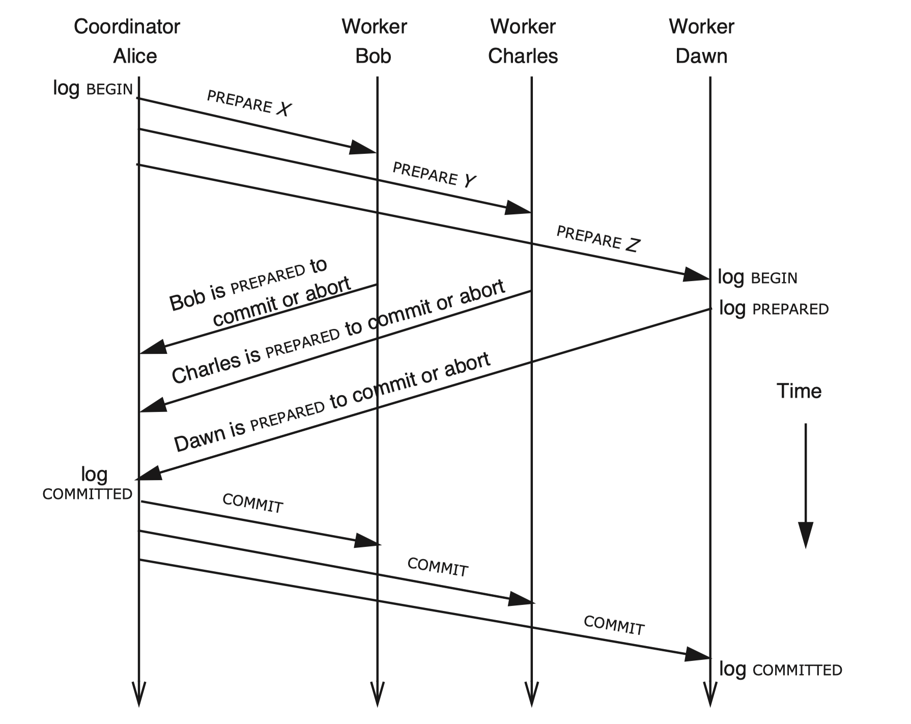

单机事务
相信在大学上数据库课的时候都讲过ACID：
- Atomicity：指事务的操作要么都完成，要么都不完成（all-or-nothing）。
- Consistent：一致性是在事务开始之前和事务结束以后，数据库的完整性没有被破坏。这表示写入的数据必须完全符合所有的预设约束、触发器、级联回滚等。
- Isolation：数据库允许多个并发事务同时对其数据进行读写和修改的能力，隔离性可以防止多个事务并发执行时由于交叉执行而导致数据的不一致。事务隔离分为不同级别，包括未提交读（Read uncommitted）、提交读（read committed）、可重复读（repeatable read）和串行化（Serializable）。
- Durablity：事务处理结束后，对数据的修改就是永久的，即便系统故障也不会丢失。
这里主要关注原子性和隔离性，隔离性主要讨论串行化。
为了保证事务中涉及到的一系列的操作的原子性，会涉及并发控制，而并发控制一般有两种策略，一种是悲观的策略，也就是我们日常中经常碰到的锁，还有一种是乐观策略，如果事务之间数据共享竞争发生的很频繁，那么悲观策略会更好一些，这里主要讨论悲观控制，乐观控制会在未来文章中提到。
使用悲观并发控制来实现事务的时候，会采用two-phase locking：
- 第一阶段：在使用数据前，获取锁。
- 第二阶段：一直持有锁，直到事务结束。
对于串行化的隔离性需要保证在事务执行过程中的中间状态是不能被外界所访问到的。
如果不遵循锁并发控制的第二阶段协议，提前释放了锁，则可能会导致事务中间状态被外界感知导致不一致发生。比如：
1 | // 转账事务 |
如果像上面的事务T1实现中，提前释放了对于x的锁，那么如果T2恰好在并发执行，那么T2中就可以访问到被更新后的x的值，并打印出来，在这个例子中，T1正常执行的情况下这是没有什么问题的，但是如果在后续T1的执行中发生了错误导致事务T1要回滚，那么x将变回初始值，这时T2中输出的x将是一个脏数据。
当然我们是希望越早释放锁越好的，这样能够提供更好的并发性，其实有一些事务的确能够提前释放锁，比如：
1 | T1: |
上面这种事务即使实现上违背了two-phase locking，也能够一直得出正确的结果。但是当操作变得复杂时，为了证明一个程序即使违背了two-phase locking，但是在所有的并发执行可能性下都产生出正确的结果，是非常的困难的，一般来说只能穷举。这也被称为NP完全问题，是一个还未被解决的问题。
对于Serializable指的是对于某一个并发执行结果，可以找到一个事务线性执行序列得到相同的结果。
比如上面的转账的例子中，假设x和y的初始值都为10。可能的线性执行序列有T1→T2，或者T2→T1，对应的T2的输出是（10，10）和（11，9）。
如果某次执行之后，T2的输出不是上面的两个结果之一，那么isolation就被打破了。
分布式事务
因为单机存储的限制，随着数据的增长最终会需要将数据分片存储。在分片存储时，如果一个事务中涉及存储在多个服务器上的数据，那么为了依旧维护事务的ACID性质，需要一些额外的协作协议。
假设下面提到的RPC都会保证超时重发直到收到回复，并且接收端能够处理重复消息。
两阶段提交（2PC）
假设一个分布式事务采用2PC来让Bob，Charles，Dawn分别做任务X，Y，Z，那么请求示意图如下。

正常流程下：
A先向B，C，D各自发送其对应的事务X，Y，Z，并在请求中包含一个全局的事务ID，TID。这样Worker才能在同时有多个事务进行的时候分辨出来自A的请求所属的事务。
以发给B的请求为例，请求内容大概是这样的：
- FROM: Alice
- TO: Bob
- 我正在进行一个事务，TID为100，你需要完成事务X。
当B，C，D收到请求后，会各自开始对应的事务（比如获取一系列的锁等），当事务执行完毕，可以准备提交时，回复给A自己当前的事务状态。
以B发给A的请求为例，内容大概如下：
- FROM：Bob
- TO：Alice
- 事务X已经准备好提交。（或事务X执行失败）
在A收到来自B，C，D的回复均表示可以提交时，A会先向Log中写入最终表决的结果为commit，然后向B，C，D发出提交请求。但是如果B，C，D中任意一个回复了失败时，A会先向Log中写入最终表决的结果为abort，然后向B，C，D发出回滚请求，代表该分布式事务失败。
以发给B的请求为例，请求内容大概是这样的：
- FROM: Alice
- TO: Bob
- 你现在可以提交（回滚）事务X了。
B，C，D在收到提交消息后，会各自提交（回滚）自己的事务。
等到A收到B，C，D提交成功的回复时，该分布式事务就提交成功了。
下面考虑各种异常情况：
- 只有worker宕机：
- 如果B在回复给A commit或者abort之前宕机了，因此B可能会丢失所有和该事务相关的信息，所以B会单方面决定放弃本次事务并清除相关log。在实现上，如果后面B重启又收到了来自A重发的prepare消息，对于自己不知道的事务（log中找不到）统一返回abort。
- 如果B在回复给A commit之后宕机了，此时和上面的情况不同，因为B向A承诺了自己会commit。如果A最后发出了commit消息，导致C和D成功提交了，但是B在重启之后忘记了该事务，不进行提交，那么就会导致不一致的发生。所以B在回复A之前必须通过WAL记录自己的变更还有自己持有的锁的信息，这样在重启之后，能够响应来自A的commit消息，继续进行提交。
- 如果B在收到commit之后，但是在ACK commit之前宕机了，那么当B重启之后会检查log，然后重放其事务X，等到执行完该事务之后就可以安全的将涉及到的log都删除了，等到未来再收到来自A重发的commit消息时，B会对所有不了解的事务都进行ACK。（不知道的prepare请求返回abort，不知道的commit请求返回ACK）
- 只有coordinator宕机：
- 如果A宕机发生在log commited之前，那么因为其还没有发出过commit，所以目前数据上不会出现部分提交的情况。可以选择：
- 直接回滚事务，向所有的worker发送abort消息，并清除相关log，等到其他没有收到commit或者abort消息的worker因为超时过来询问为什么还没有收到commit时，对于所有不清楚的事务统一返回abort。
- 或者，继续发起prepare收集worker的回复，整个流程重新来一遍。但是这种处理下，需要保证所有的worker都是alive的，如果有worker宕机了，那么A只能等待。
- 如果A宕机发生在log commited之后，那么A是有可能已经发出过commit消息的，那么A只能根据log中记录的决策，再次发送commit消息，不能选择回滚（如果硬要回滚，可以先询问是否有worker成功收到过commit，如果没有，可以安全回滚）。
- 如果A在发送部分commit消息之后宕机了，并且worker都没有宕机，那么worker可以通过互相协商，从那些收到commit消息的节点中得出commit的结论，让整个事务进行下去。
- coordinator和部分worker宕机了：
- 如果coordinator发出部分commit消息后，和收到commit消息的worker一起宕机了，那么剩下的节点是无法通过互相协商得出结论的，只能阻塞等待，因为从存活的worker的角度来看，他们并不知道宕机的worker是否已经提交了。
- 其他问题：
- 如果A在发送完所有的prepare消息之后，过了很久没有收到所有worker的回复，此时可以选择重发prepare消息，但是因为其他worker都持有着锁可能会影响系统性能，所以A也可以在一定时间没有收到全部回复后，单方面决定发送abort消息去终止这个事务。
所以可以看到2PC过程中，在coordinator和收到commit的worker都宕机的时候，为保证数据一致性，它只能一直等待Transaction coordinator或者worker重启，因为各个worker都在持有着锁等待着，在极端情况下可能造成活锁影响可用性。
当然如果实际使用中可用性更重要的话，可以允许worker超时单方面回滚事务，但是可能需要人工或者脚本介入进行数据修正。
正是因为2PC的阻塞特性，还有处理过程中的同步的磁盘操作（WAL），所以性能上并不是很好。一般在小范围的比如同一个机房内使用，但是不会在跨机构或者数据中心内使用，因为如果两个银行间转账使用了这个2PC，那么他们可能需要为对方的错误买单（长时间阻塞系统）。
所以为了让2PC各个成员有更高的可用性，所以一般会将transaction coordinator和worker变为集群，集群中使用类似raft、paxos等容错共识算法。
三阶段提交（3PC）

3PC在2PC的基础上，将commit阶段分为了pre-commit和commit两个阶段。
在3PC中的pre-commit消息的目的就是让coordinator将这个决定（commit或者abort）先发送给所有worker，在确保所有的worker都已经知道决策结果之后再进行commit，那么即使后面coordinator和部分worker宕机之后，剩余的节点也可以自行进行协商提交或者回滚。
考虑特殊情况：
- 如果A在发送pre-commit之前就挂了，那么B，C，D会因为超时而回滚，A在恢复以后也默认回滚。这样是安全的。
- 如果A在发送pre-commit给B后，还没能给C，D发送时，A挂了。那么可以通过让B，C，D之间互相通信，最终收到pre-commit的B会将pre-commit的消息传递给C和D，最终当大家都收到pre-commit之后，事务就可以成功提交。在A重启的时候，通过询问，发现B，C，D都已经提交了，那么A就可以让该事务提交。如果A重启的时候，通过询问，发现B，C，D还没有提交，那么就会重发pre-commit消息，重新开始第二阶段。
- 如果A在发送pre-commit给B后，还没能给C，D发送时，A和B都挂了。那么C和D是无法通过互相交流来得知A的决定的：
- 如果在C和D超时之前，B重启了，那么B会将其收到的pre-commit消息传给C和D，那么B，C，D最终都会变为pre-commit的状态，等到大家都变得一样的状态了就可以提交了。这样在A重启之后可以通过询问得知他们都已经提交了，自己也会提交。
- 如果在C和D超时之前，B还没有重启，那么C和D因为彼此都没有收到pre-commit会一致协商决定回滚。在A重启之后，通过询问可以知道C和D已经回滚了，那么A也会宣布事务回滚。等到B重启之后，通过询问C和D或者A，也可以知道事务已经回滚，那么B也会回滚。
- 如果A在发送完pre-commit之后发送doCommit之前宕机了，那么worker间可以互相通信得出commit的结论，然后一起commit，在A重启之后，会发现大家都commit了，自己也会commit。
3PC中不管宕机几个节点，只要在超时后，存活的worker之间能够通过协商达到一个统一的状态，一起执行commit或者abort，那么后面恢复的节点将可以通过询问简单照做就可以了。这是为什么3PC能够消除阻塞的原因。
而在2PC中，在节点没有收到commit的情况下，其他节点是有可能有已经提交了的，存活的节点不能擅自回滚，所以2PC下只能阻塞等待。
根据上面说的实现，可以发现3PC是不能忍受网络分区的，考虑如果因为网络分区将所有收到pre-commit的节点放入一个分区中，而其他没有收到pre-commit的再另一个分区，那么第一个分区内的节点协商会得出commit的结果，而第二分区内的节点会协商出abort的结果，这样就会导致数据不一致。
Sage

对于一个耗时很长很长的事务，通过2PC将所有数据一直锁着肯定是不合理的，所以Saga通过将一个长事务，拆成很多小的事务依次执行，然后为每个事务准备一个补偿事务，如果其中一个事务执行失败了，那么会逆向的依次执行对应的补偿事务，以此让状态回滚回最初。
但是这种模式下因为子事务是分别commit的，可能会有破坏isolation的操作出现，比如在上图中T1在本地提交之后，在整个大的事务没有提交之前，被其他的程序改了或者读了数据，最终因为后面的T3执行失败，导致整个大事务要回滚，那么之前的被读取的数据可能就是脏数据。并且因为数据被改了有可能C1执行也会失败。单机事务